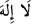
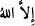
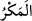

et-Te’vîlâtü’n-Necmiyye’de der ki: “Kim izzet ve şeref istiyor idiyse, bilsin ki, izzet
ve şerefin hepsi Allah’ındır” âyetinin bir işârî anlamı da şudur: İnsan elbette ki zelil,
âciz ve her şeye muhtaç olarak yaratılmıştır. İnsanın her şeye muhtaç olması gibi başka
hiçbir şey diğer bir şeye muhtaç değildir. İnsan dışında her şeye muhtaç olan başka bir
varlık yoktur. Zillet hâcetle beraberdir. Hâcet ve ihtiyacı çok olanın zilleti de çok olur.
İşte hiç kimseye ve hiçbir şeye muhtaç olmadığı için “bütün izzet ve şerefin hepsi
Allah’ındır.” Her şey O’na muhtaç olduğu için O’na itâat halindedir. İnsanın ihtiyacı ne
kadar tam ve kâmil olursa zillet ve âcizliği de o kadar tam ve kâmil olur. Yâni Allah’tan
başkasından izzet ve şeref talep edilmez. Zira o da aynı şekilde Allah’a muhtaç bir
zelildir. O nedenle kul, eşyadan izzet ve şeref talep etmekten ne kadar kaçınırsa, zilleti o
kadar azalır; Allah’tan başkasına ihtiyacı olmadığını idrak eden kulun izzet ve şerefi
artar. Allah’tan başkasına muhtaç olma hali, “
” nefyi ve “illallah (
)” ıspatı ile
ortadan kalkar. İşte bu nefiy ile kulun hem dünya hem de âhiretle olan ilgi bağları
kesilir. Ispat ile tamamen Hak Teâlâ hazretlerine yönelir. Kulun başka dünyevi ilgi ve
bağı kalmayınca da kelimenin hakikati Hak Teâlâ’nın zâtına döner, ona yükselir. Nitekim
ateş de taş ve demirin çarpışması ile Esîr Feleğinden elde edilir ve sonra onunla ağaç
tutuşturulur. İşte ateş, ağacı yer, yakar ve onun odunluğunu yok eder. Ortada ateşlik kalır.
Ağaç tamamen yok olup gider. Nihayet odunun varlığından ortada bir şey kalmayınca
ateş Esîr’e döner. İşte Allah Teâlâ’nın “O’na ancak güzel sözler yükselir (ulaşır).
Onları da Allah’a amel-i sâlih ulaştırır.” kavlinin sırrı budur.
Burada “sâlih amel”den kastedilen şeriatın erkanıdır. Bunların ilki ise “Lâ ilâhe
illallah” demirinin katı kalp taşı ile çarpışmasından meydana gelen hazret Esîr’inden
Allah’ın nurunun, ateşinin tam olarak ortaya çıkarılmasıdır. Artık ateş insâni varlık
ağacına düşünce kul İslam’ın kendisi üzerine bina edildiği beş erkandan bir rukün ile
amel etmiş oldu. Kalan dört rukün ise bu ağacın kökünü dünya unsurlarından koparıp bu
ilgi bağını tamamen kesmesi demek olan sâlih ameldir. Ağaç bu sayede ateşi kabule
müsâit ve hazır hale gelecek, tutuşup alev alev yanacaktır. Böylece ağaç tamamen
yanacak ve Esîr mertebesine geçecektir. İşte ağaç bu ateşle yanıp tutuşunca Musa (a.s.)
“Tûr tarafından bir ateş gördü. Oraya gelince, o mübarek yerdeki vâdinin sağ
kıyısından, (ateşin diliyle oradaki) ağaç tarafından kendisine şöyle seslenildi: Ey
Musa! Bil ki ben, bütün âlemlerin Rabbi olan Allah’ım” (el-Kasas 28/29-30). Bu
sözü düşün; inşallah anlarsın!
“Kötülüklerle tuzak kuranlara gelince, onlar için” kurdukları bu tuzaklar sebebiyle,
dünya ve âhirette menzili idrak edilemeyen ve onların tuzaklarının hiç sayılacağı “çetin
bir azap vardır ve” Allah’ın yahut tuzak kurdukları kişinin tedbiri değil, “onların” yâni
Peygambere tuzak kurmayı murad eden müfsidlerin “tuzağı bozulur.”
“
”, bir hile ile başkasını maksadından çevirmektir. Kâmûs’ta der ki: “
” hile
ve hud’a yapmaktır. Bu âyet, güzel sözlerin ve sâlih amelin halini beyandan sonra kötü
(habis) söz ve amelin ve bunların sahiplerinin hâlini beyan eder. Yâni “bunlar